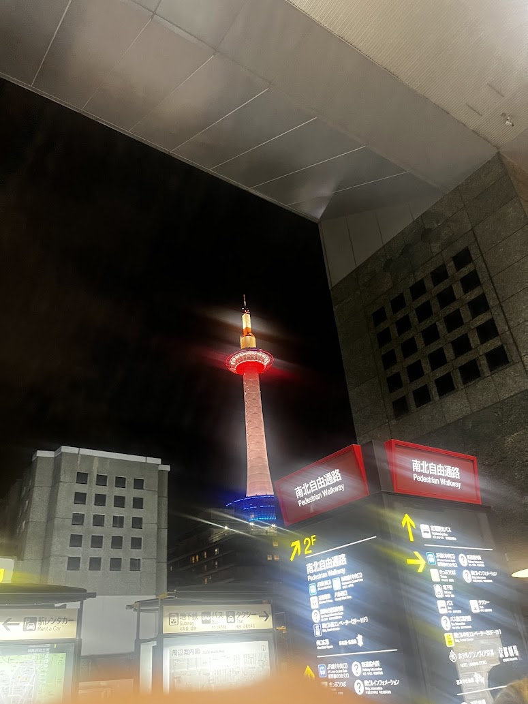
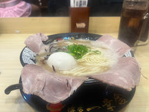
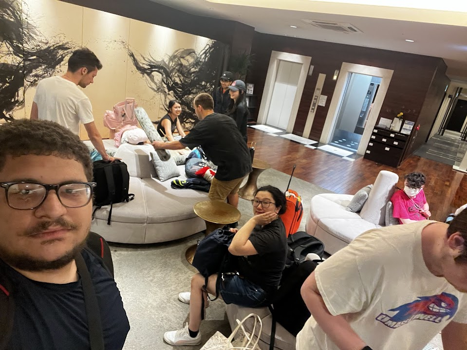
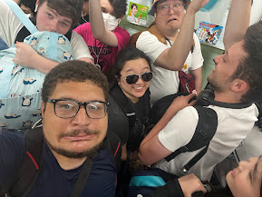
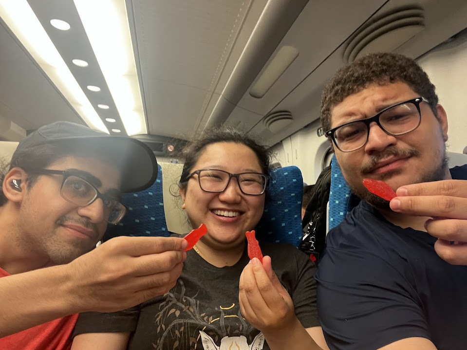
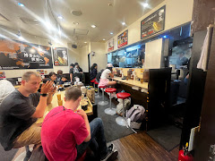

Day 10 – Ogawa, Saitama
For our final morning in Saitama, it was quite a doozy—and a day to remember for many reasons. To start, we wrapped up our print work and headed to the Mokuhanga woodblock printing workshop after saying our final goodbyes to Ei-san. Once we arrived at the workshop, we got to work on creating our final prints using the handmade paper that had been specially prepared for us by the staff. We each made four prints, and after finishing, we held a small exhibition where we observed and appreciated each other’s pieces. It was a great opportunity to reflect on what we had created and what we might have done differently during the process.
After saying our goodbyes and officially concluding the workshop, we took a final group photo to commemorate the experience and the fun we’d had together something that would later come back to haunt us. Because of the time we took to capture that final photo, we found ourselves racing against the clock to get to the train station. We had to make it all the way back to Tokyo, then transfer to another station to catch our Shinkansen bound for Kyoto. This train was scheduled to depart within minutes of our arrival at Shinagawa Station, and missing it was simply not an option.What followed was a near-panic situation as we scrambled to reach the station, frantically trying to scan six people’s worth of tickets at once to get through the gate. The station staff barely managed to help us through, and we bolted toward the platform where our train was waiting. I personally didn’t know that you could board any car of the Shinkansen and then walk through the train to reach your assigned seat, so I ended up sprinting like a madman down the platform, trying to find the exact car listed on my ticket.
Once we were finally on board, we received the most tragic news imaginable: we had been deceived. We were all under the impression that there would be graceful Japanese women rolling carts down the train aisles, offering us beautiful bento boxes for our two-plus-hour ride. Instead, our professor dropped the crushing truth that the train only offered drinks like water, soda, beer, and cocktails along with small snacks and ice cream. This news devastated us and shook us to our core. The ride quickly turned into a dramatic, meme-filled survival saga within our WhatsApp group chat, as we tried to come to terms with our dashed bento dreams while snacking on what was actually available.Despite the chaos, the ride itself was smooth and even fun in its own weird way. When it was over, we finally arrived in Kyoto and took a bus to our final stop on this incredible trip.


